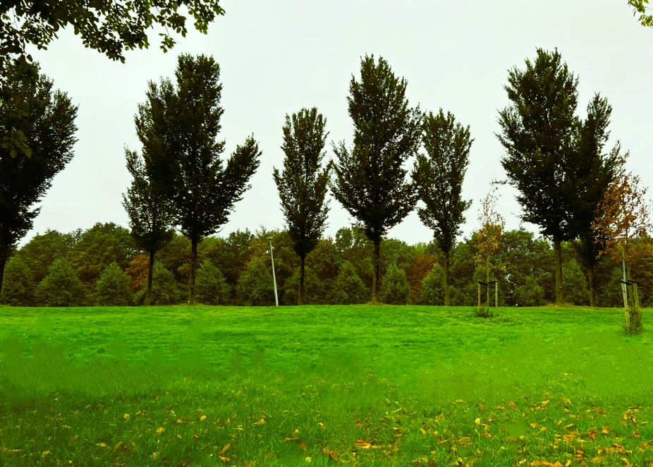

Dicover Amsterdam north's beautiful parks and green spaces
Noorderpark
Noorderpark is one of the biggest parks in our neighborhood, located at the heart of the Amsterdam North, here there are plenty of activities for everyone, young and old to enjoy. This sprawling green space offers a playground, fitness areas, and a football field to play as well or simply relax with a book on grassy lawns. You can access it with public transport, both Metro 52 click here and GVB Bus 34 click here. Find more information on Noorderpark Website.
W.H. vliegenbos
One of the few real nature reserves and the oldest forest in Municipality of Amsterdam. It is a nature area where peace and nature experience are paramount. If you enjoy walking and hiking in the forest, WH Vliegenbos is the right place for you. It is also a perfect place for a family picnic or leisurely stroll. From North Station, you can reach WH Vliegenbos with Metro 52 click here and GVB bus 38 click here. Would you like to know more details or what to expect in W.H. Vliegenbos, visit WH Vliegenbos Website.